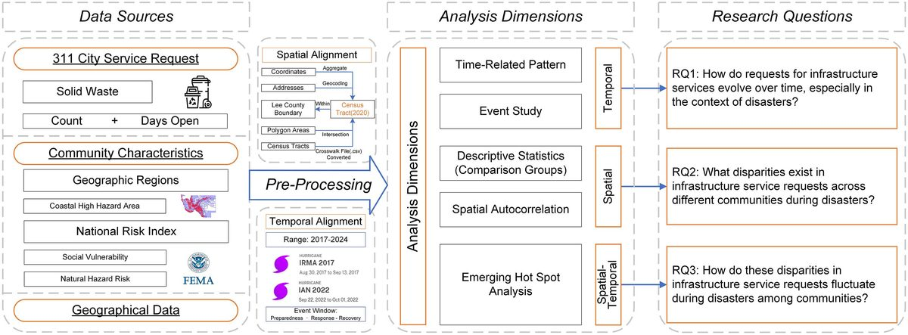
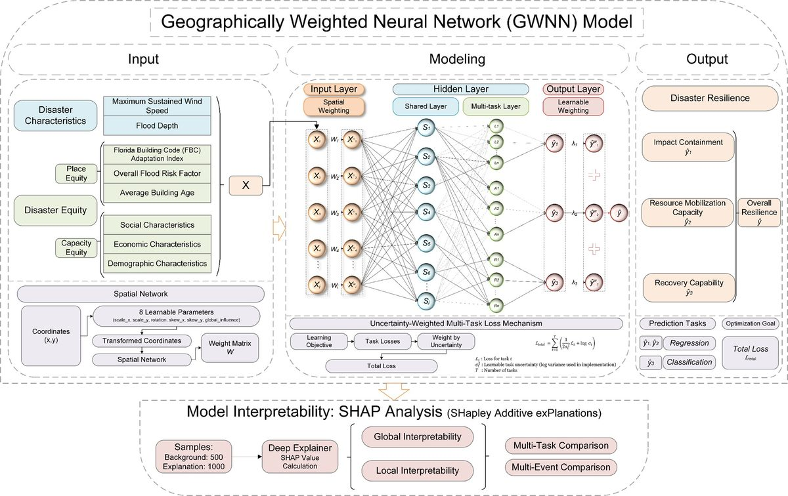
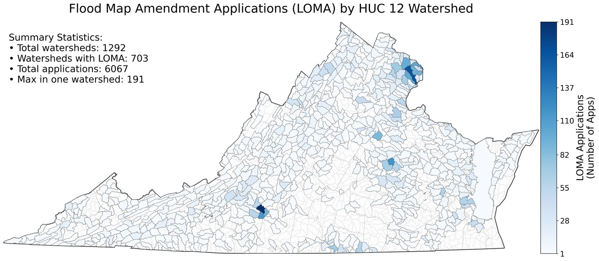
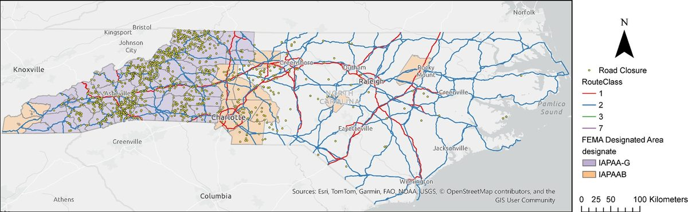
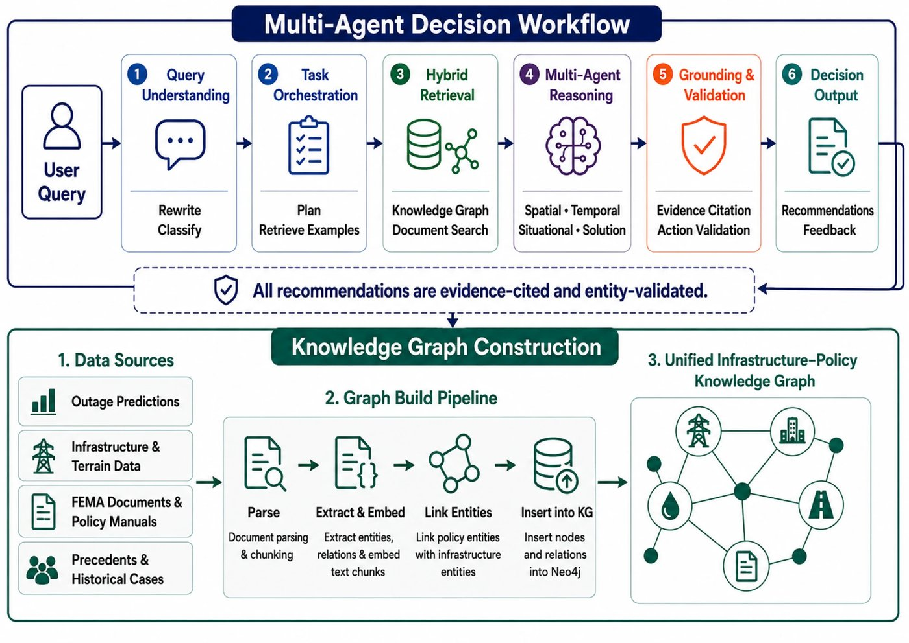
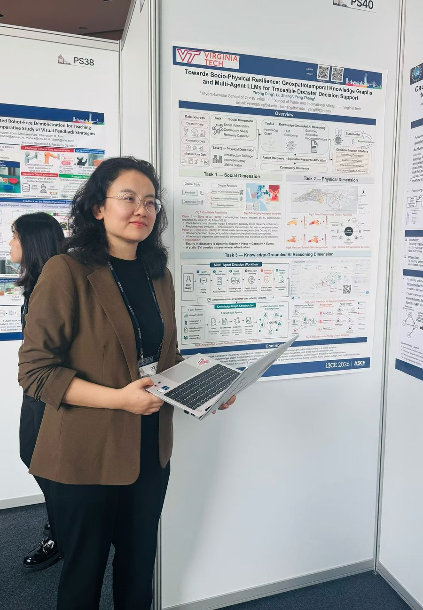
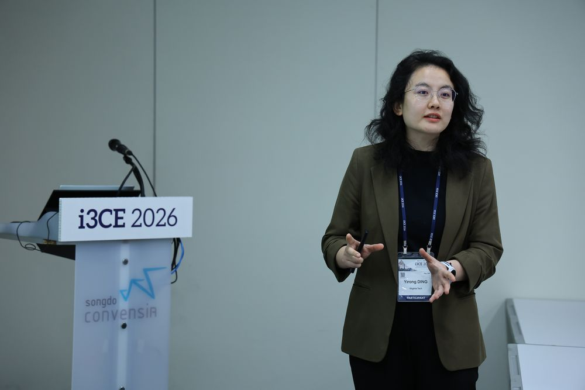
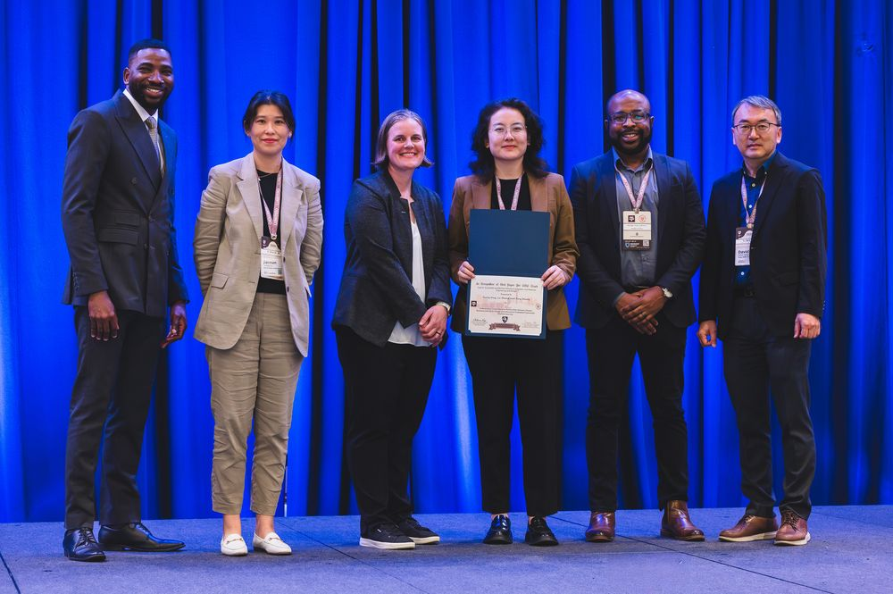
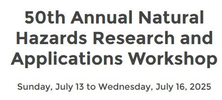
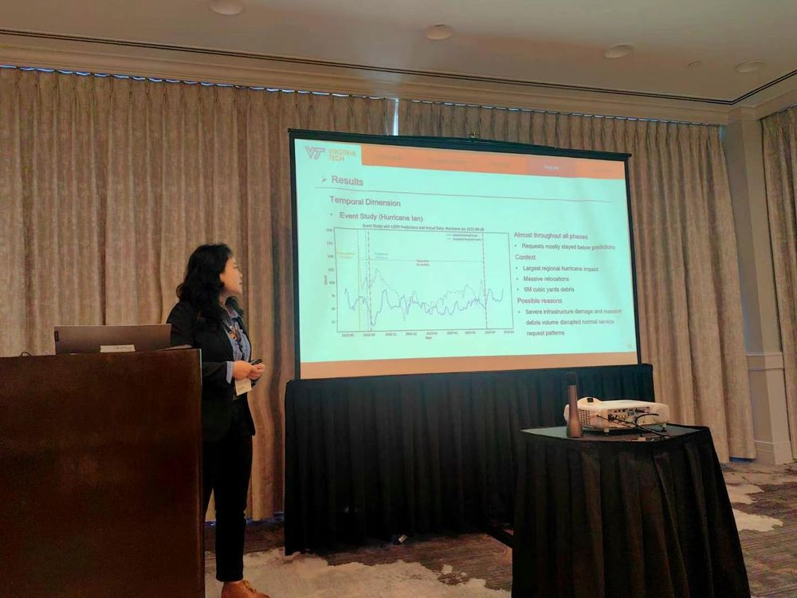

About
Selected Honors & Awards
- 2026 Best Paper per CRC Track, Track 8: Sustainable and Resilient Infrastructure Systems and Materials Engineering and Design, CI & CRC Joint Conference
- 2025Research Award, Myers-Lawson School of Construction, Virginia Tech
- 2025Phi Kappa Phi Member, National Honor Society of Phi Kappa Phi
- 2025Disaster Resilience Interdisciplinary Graduate Education Program (DR-IGEP)
- 2024Pratt Fellowship, Virginia Tech
- 2019 & 2022Excellent League Member, Yunnan Design Institute Group Co., Ltd.
- 2016Outstanding Graduation Project, Chongqing University
- 2014Excellent Student Leader, Chongqing University
- 2014Bronze Medal, AkzoNobel China Student Sustainability Award
- 2014Excellent Volunteer, National Youth College Science Camp: Chongqing University Camp
Research Interests
Disaster Resilience & Infrastructure Service Equity
- Community Resilience
- Equitable Resilience
- Disaster Management
- Urban Policy
Geospatial & Network Analysis
- Urban Analytics
- Human Mobility
- Human Behavior
- Computational Social Science
Explainable AI for the Built Environment
- Spatial Intelligence & Explainable GeoAI
- Causal Discovery
- Built Environment
Knowledge Graphs & Multi-Agent Systems
- Knowledge Graph & Grounded LLM
- Multi-agent Systems
- Agent-based Social Simulation
Education
-
 Jan. 2024 – Expected May 2027Ph.D. in Environmental Design and PlanningDissertation: Towards Socio-Physical Resilience Geospatiotemporal Knowledge Graphs and Multi-Agent LLMs for Grounded Disaster Decision SupportSep. 2024 – Expected Dec. 2026M.Eng. in Computer Science (Simultaneous Degree)2026Future Professoriate Graduate CertificateAdvisor: Dr. Lu Zhang · Co-advisor: Dr. Yang Zhang
Jan. 2024 – Expected May 2027Ph.D. in Environmental Design and PlanningDissertation: Towards Socio-Physical Resilience Geospatiotemporal Knowledge Graphs and Multi-Agent LLMs for Grounded Disaster Decision SupportSep. 2024 – Expected Dec. 2026M.Eng. in Computer Science (Simultaneous Degree)2026Future Professoriate Graduate CertificateAdvisor: Dr. Lu Zhang · Co-advisor: Dr. Yang Zhang
Committee Members: Dr. Junghwan Kim, Dr. Dawei Zhou -
Jan. 2023 – Dec. 2023M.Sc. in Civil Infrastructural Engineering and ManagementThesis: Low-cost and Accurate Occupancy Prediction on CampusAdvisor: Dr. Zhe (Walter) Wang
-
Sep. 2012 – June 2016B.Eng. in Civil EngineeringGraduation Project: Multi-Specialty Joint Graduation Project, Chengdu Xinglong Lake ResortOutstanding Graduation Project
Experience
-
Jan. 2024 – NowGRA/GTA
-
 Apr. 2017 – Jan. 2023Structural Design Engineer / Design Supervisor / Design Representative
Apr. 2017 – Jan. 2023Structural Design Engineer / Design Supervisor / Design RepresentativeView Details
- Conducted or led structural calculations, seismic analysis, and design for approximately 30 building projects totaling more than 220,000 m².
- Led design management and coordination as design general contractor for the RMB 1.618 billion Fuxian Lake Vegetation Restoration PPP Project.
- Resolved on-site design issues for five building projects totaling more than 680,000 m².
-
 Jul. 2016 – Mar. 2017Steel Structure Engineer and BIM Engineer
Jul. 2016 – Mar. 2017Steel Structure Engineer and BIM EngineerView Details
- Designed Tekla connections for four building projects with investments exceeding RMB 1 billion.
- Completed BIM modeling for the 24,363.59 m² Huaxia Yufu commercial project in Kunming.
-
 Jan. 2015 – Feb. 2015Structural Design Intern
Jan. 2015 – Feb. 2015Structural Design InternView Details
- Studied structural design and analysis for Kunming Metro Line 3 subway stations and sections.
Publications

1st author
NHR 2026
Cited by 1
Spatial-Temporal Dynamics of Public Infrastructure Service Inequality during Disasters
Natural Hazards Review, 27(1), 04025067, 2026
Read paper ↗

1st author
SCS 2026
Cited by 2
Context-Sensitive Analysis of Disaster Resilience and Equity through Geospatial Explainable Machine Learning
Sustainable Cities and Society, 139, 107203, 2026
Read paper ↗

JAPA 2026
Cited by 0
Flood Hazard Maps for Local Flood Policy in the United States: Barriers and Opportunities
Journal of the American Planning Association, 1–16, 2026
Read paper ↗

1st author
CRC 2026
Best Paper
Cited by 0
Understanding Context-Sensitive Relationships between Disaster Resilience and Equity through Geo-Information Embedded Explainable Machine Learning
Construction Research Congress 2026, pp. 358–367
Read paper ↗

1st author
i3CE 2026
Accepted
Characterizing Spatial and Temporal Heterogeneity in Lifeline Facility Accessibility in Hurricane Helene
2026 ASCE International Conference on Computing in Civil Engineering (i3CE)
Invited to submit an extended version to a Journal of Computing in Civil Engineering special collection

1st author
i3CE 2025
Cited by 0
Public Infrastructure Service Disparities: Spatiotemporal Analysis of Solid Waste Service Requests during Hurricane Irma
Computing in Civil Engineering 2025, pp. 339–349
Read paper ↗

1st author
Under review
When Flood Maps Disagree: Regulatory and Alternative Flood Hazard Assessment in Local Flood Governance
1st author
In preparation
Place-based Uncertainties: Contextualizing Agreement and Divergence between Regulatory and Alternative Flood Hazard Assessments for Local Flood Governance
1st author
In preparation
Interpretable Spatio-Temporal Modeling of Lifeline Facility Accessibility during Hurricane Helene: A Neural Additive Mixture-of-Experts Approach

1st author
In preparation
PowerKG-Harness: An Auditable Knowledge Graph-Grounded LLM System for Facility-Level Power Outage Decision Support
Citation counts from OpenAlex.
Presentations

Poster
2026
Towards Socio-Physical Resilience: Geospatiotemporal Knowledge Graphs and Multi-Agent LLMs for Traceable Disaster Decision Support
i3CE 2026, Incheon, South Korea

2026
Characterizing Spatial and Temporal Heterogeneity in Lifeline Facility Accessibility in Hurricane Helene
i3CE 2026, Incheon, South Korea
2026
Assessing Agreement and Divergence in FEMA and FSF Flood Hazard Delineations
Virginia Crossroads Flood Resilience Symposium, 2026, Charlottesville
Video ↗

2026
Best Paper
Understanding Context-Sensitive Relationships between Disaster Resilience and Equity through Geo-Information Embedded Explainable Machine Learning
CI&CRC Joint Conference, 2026, San Antonio

2025
Flood Hazard Maps and Local Flood Policy in the U.S.: Barriers and Opportunities
Natural Hazards Workshop 2025
Workshop ↗

2025
Public Infrastructure Service Disparities: Spatiotemporal Analysis of Solid Waste Service Requests during Hurricane Irma
i3CE 2025, New Orleans
Proposal Development
- 2026Student PI and lead proposal writer: Impact-Based Coastal Flood Prediction for Virginia's Coastal Communities: A Knowledge-Driven Decision Support Framework. Student Grant Research Proposals, Virginia Water Resources Research Center.
- 2025Student PI and lead proposal writer: Rapid Flood Impact and Recovery Assessment and Knowledge-Based Decision Support System. Student Grant Research Proposals, Virginia Water Resources Research Center.
- 2024–2026Supported faculty-led proposals for NSF Fire Science Innovations through Research and Education (FIRE) and EDU Core Research (ECR:Core) by preparing references; developed overall framework figures for other proposals.
University Service
- Virginia TechGraduate Ambassador, Myers-Lawson School of Construction
Academic Service
Mentoring
Undergraduate Project Co-Mentor
- 7th Annual ASCE VIMS Datathon Competition 2026Co-mentored two undergraduate students with Dr. Tianzhi He on 3D Gaussian Splatting reconstruction of high-fidelity indoor built-environment models.
Professional Organizations
ASCE Student Member
- Visualization, Information Modeling, and Simulation (VIMS) Committee
- Global Center for Excellence in Computing
- Data Sensing and Analysis Committee
BIM Students Forum
- Member of the Academic DivisionOrganizing regular webinars with scholars worldwide on cutting-edge BIM research and industry practice.
Peer Review
Conference Reviewer
- ASCE International Conference on Computing in Civil Engineering (i3CE 2025/2026)
- CI & CRC Joint Conference 2026
- CONVR / ICIO 2026
- SASBE/FR/BDTSC 2026 Joint Conference
Journal Reviewer
Top